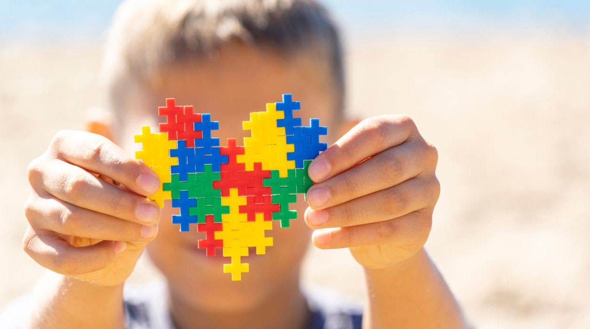
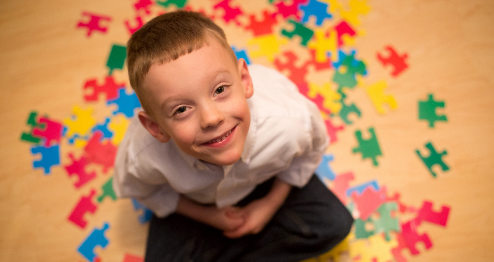
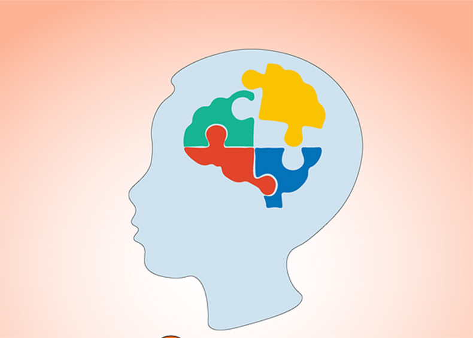
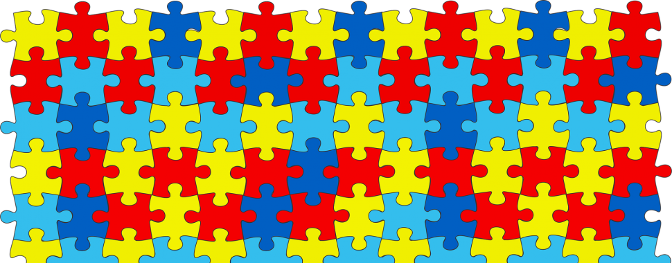

Autismo
Transtorno do Especto Autista (TEA)
Conhecido como transtorno do espectro do autismo por apresentar vários sintomas diferentes de socialização inadequada, dificuldades de comunicação e interesses restritos. De acordo com o centro de prevenção e controle de saúde americano, o autismo afeta hoje, uma em cada 68 crianças.
Possíveis Causas do Autismo:
- Deficiências e anormalidades cognitivas de causas genética e hereditária - Alterações bioquímicas - Anormalidade Cromossômica - Fatores ambientaisSinais do Autismo
Interação social
- Não olhar nos olhos - Risos e gargalhadas fora de hora - Dificuldade no relacionamento com outras crianças - Repetir sempre a mesma coisa
Comunicação e Linguagem
- Tem sempre a mesma expressão no rosto - Repete uma pergunta várias vezes em seguida - Comunicação retraída
Comportamento e Personalidade
- Não tem medo de situações perigosas - Olha sempre na mesma direção - Fica sempre se balançando - Dificuldade de adaptar-se a novas rotinas - Ficam extremamente agitados em ambientes barulhentos
Nível 1
É o mais leve, o autista apresenta algumas dificuldades nas relações sociais, e na comunicação em geral e apresenta a necessidade de pouco apoio
Nível 2
Apresentam dificuldades nas relações sociais E na comunicação verbal e não verbal precisando de apoio substancial
Nível 3
 É o mais grave. severos prejuízos na comunicação verbal e não verbal necessidade de muito apoio substancialTratamento e conscientização
O principal objetivo do tratamento é reduzir os sintomas a partir do aprendizado e desenvolvimento, ou seja, melhorar as habilidades sociais e de comunicação do autista. O tratamento é feito através de atividades multidisciplinares.
Dia mundial do Autismo
Símbolo do autismo